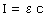
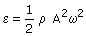
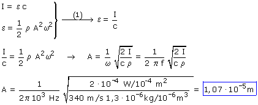

Las unidades de la intensidad indican que se trata de una onda tridimensional Intensidad de una onda:  Densidad de energía del medio tridimensional:  Combinando las dos expresiones resulta el sistema:  Cuando este sonido se propaga por el aire, las moléculas de este oscilan con una amplitud de 0.0107 mm en la misma dirección que la de propagación (Las ondas sonoras son longitudinales) |